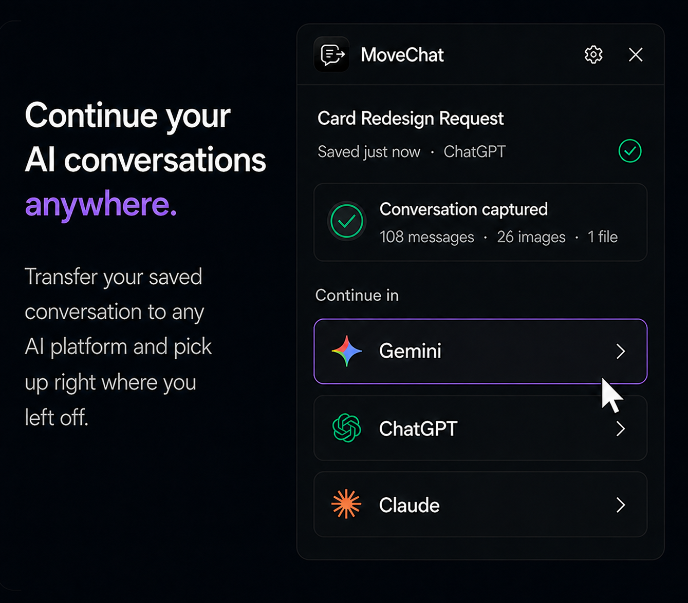
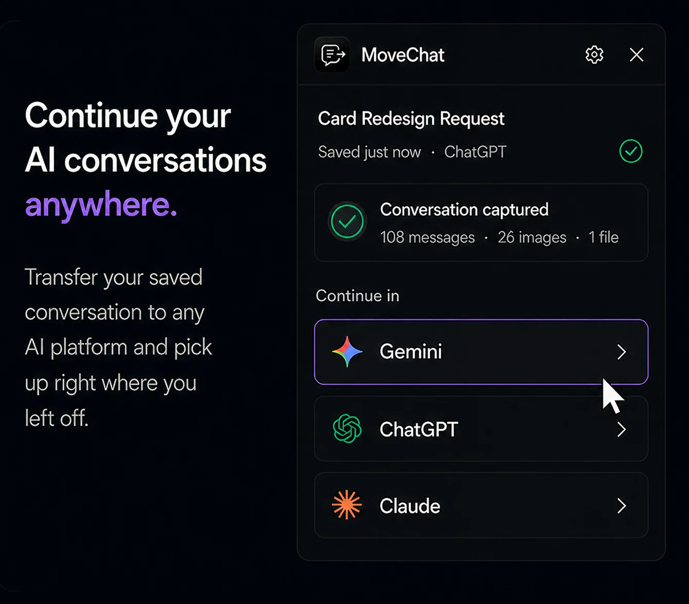

AI models have distinct strengths. Claude 3.5 and 3.7 are praised for refactoring code, producing natural writing, and maintaining consistency across huge context windows. Meanwhile, ChatGPT excels at quick iteration, web browsing, code execution with Advanced Data Analysis, and reasoning models.
Most power users do not stick to a single model. You might begin planning an architecture in ChatGPT, hit a roadblock, and want Claude's take on the problem. Or you might be debugging in Claude, hit the strict five-hour rate cap, and need to continue immediately without losing your past thirty messages.
Because OpenAI and Anthropic operate separate closed ecosystems, neither offers a simple "Export to Claude" or "Import from ChatGPT" button. Below are the most effective strategies to bridge that gap.

The Problem with Raw Copy-Pasting
When people need to switch platforms, their first instinct is to drag their mouse across five pages of conversation, press Ctrl + C, and paste the wall of text into a fresh chat.
This usually backfires for several reasons:
- Role Confusion: When pasted as a single massive prompt, the receiving model cannot easily differentiate between what you said and what the previous AI said. It often replies by answering previous questions you already solved.
- Broken Code Indentation: Browser text selections routinely collapse tabs, strip backticks, and misalign indentation in Python and YAML code blocks.
- Lost Media and Attachments: Screenshots, diagrams, and uploaded spreadsheets you shared earlier are discarded completely in plaintext clipboard operations.
Method 1: The "Handover Brief" Prompt Technique (Manual)
If you prefer not to install any extensions, the cleanest manual technique is to ask your current AI assistant to generate a formal handover briefing before you switch.
Instead of copying the raw chat, send this prompt to your current assistant at the end of the thread:
Please summarize our entire conversation into a comprehensive handover brief for another AI model.
Include the following sections:
1. Core Objective: What problem are we solving?
2. Technical Constraints: Languages, frameworks, and architecture rules decided.
3. Decisions Made: Key solutions agreed upon and approaches ruled out.
4. Current Status: What was completed in the latest iteration?
5. Next Steps: The exact task to execute next.
Format the summary clearly in Markdown so another AI can resume immediately without ambiguity.Once the assistant outputs the briefing, copy that single message, open the target platform (such as Claude), and prefix it with:
I am continuing a project started in another AI session. Here is the context briefing so far:
[Paste Handover Brief here]
Please confirm you understand our objective and proceed with the first next step.This method eliminates role confusion and drastically reduces token usage. However, it requires prompt drafting and still does not transfer your original files, images, or conversation history verbatim.
Method 2: One-Click Transfer Using MoveChat (Automated)
If you switch models frequently, MoveChat automates the entire migration in three clicks.

-
Capture your current session
While on your active chat at
chatgpt.comorclaude.ai, open the MoveChat extension and click Capture this session. MoveChat reads the full message tree, preserving code blocks, math formatting, and attachments. -
Select your destination platform
Choose your target platform from the resume menu: ChatGPT, Claude, Gemini, Perplexity, or DeepSeek.
-
Resume in a new chat
Click Resume in new chat. MoveChat automatically opens a fresh conversation tab in the target model, injects the formatted context and role labels, and prepares the prompt ready for you to press Enter.
Optional AI Summary Handoff
For threads that span over fifty messages, MoveChat includes an optional AI Summary Handoff feature. If you have your own API key configured, MoveChat can condense the thread into an optimal context envelope before injecting it, saving tokens while preserving core decisions.
Switch between ChatGPT and Claude seamlessly
Move conversations across models with all code, images, and context intact. Free and open source.
Exporting Claude Chats to Local Files (Markdown & PDF)
Anthropic allows users to request an account data archive in account settings, but like OpenAI, this produces a delayed dump of all data rather than single-chat files.
If you specifically need to download an individual Claude chat to Markdown or PDF:
- Open the Claude conversation you want to keep.
- Click MoveChat and hit Capture this session.
- Click Download as Markdown for clean documentation in Obsidian or GitHub, or click Download as PDF for a formatted printable copy.
Frequently Asked Questions
Can Claude understand code blocks exported from ChatGPT?
Yes. As long as code blocks are formatted using standard Markdown syntax with language tags (such as ```typescript), Claude parses them naturally and maintains correct syntax rules.
What happens if my conversation is longer than the target model's context window?
Claude has a 200,000 token context window, which easily accommodates most long conversations. When moving into smaller context models, using MoveChat's summary handoff mode ensures only relevant architectural decisions and active state are transferred.
Does moving a chat expose my API keys or private data?
MoveChat runs locally inside your browser sandbox. It contains zero tracking or external analytics servers, and all captured messages remain on your computer.